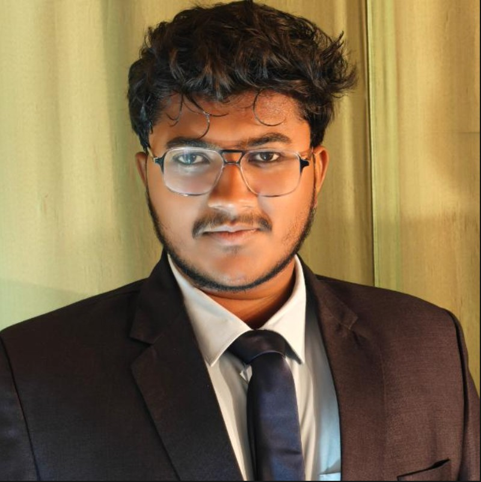

ECE Graduate | Aspiring AI & Data Analyst
Electronics and Communication Engineering graduate with a strong foundation in electronics, embedded systems, programming, and communication technologies. Passionate about both Core Electronics and Information Technology, with hands-on experience in Python, SQL, Java, IoT, MATLAB, AutoCAD, Tinkercad, Siemens PLC, Keil, Proteus and Web Development. A quick learner eager to solve real-world problems while continuously learning and contributing in a technology-driven organization.
AI-Based Non-Dustable Roads
Portfolio Website
Arduino IoT Project